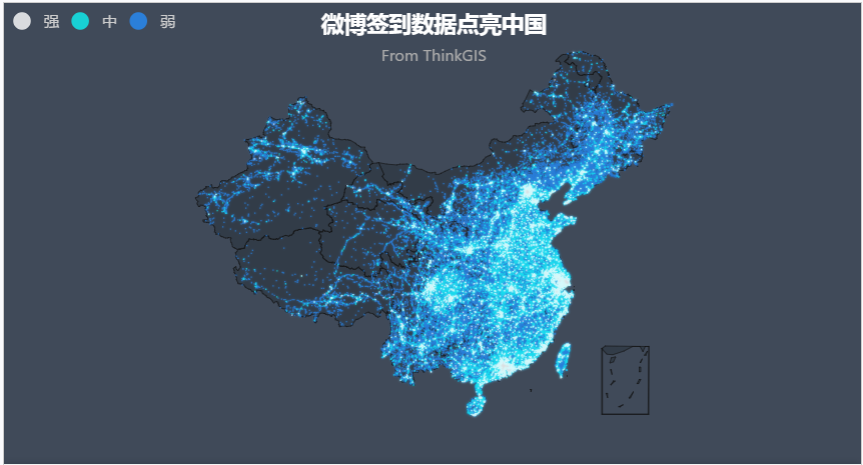

【JS-task10 Echarts】
分享人：龚家豪
目录
1.背景介绍
2.知识剖析
3.常见问题
4.解决方案
5.编码实战
6.扩展思考
7.参考文献
8.更多讨论
1.背景介绍
Echarts是什么
ECharts，一个纯 Javascript 的图表库，可以流畅的运行在 PC 和移动设备上， 兼容当前绝大部分浏览器（IE8/9/10/11，Chrome，Firefox，Safari等）， 底层依赖轻量级的 Canvas 类库 ZRender，提供直观，生动，可交互， 可高度个性化定制的数据可视化图表。
2.知识剖析
Echarts的特性
丰富的图表类型
折线图，柱状图，散点图，饼图，K线图，用于统计的盒形图， 用于地理数据可视化的地图，热力图，线图，用于关系数据可视化的关系图，treemap， 多维数据可视化的平行坐标，还有用于 BI 的漏斗图，仪表盘，
并且支持图与图之间的混搭。你可以在下载界面下载包含所有图表的构建文件，如果只是需要其中一两个图表， 又嫌包含所有图表的构建文件太大，也可以在在线构建中选择需要的图表类型后自定义构建。
多个坐标系的支持
ECharts 3 开始独立出了“坐标系”的概念，支持了直角坐标系（catesian，同 grid）、极坐标系（polar）、 地理坐标系（geo）。图表可以跨坐标系存在，例如折、柱、散点等图可以放在直角坐标系上， 也可以放在极坐标系上，甚至可以放在地理坐标系中。
大数据量的展现
3.常见问题
获取Echarat
4.解决方案
你可以通过以下几种方式获取 ECharts。
- 从官网下载界面选择你需要的版本下载
- 在 ECharts 的 GitHub 上下载最新的 release 版本，解压出 来的文件夹里的 dist 目录里可以找到最新版本的 echarts 库。
- 通过 npm 获取 echarts，npm install echarts --save，详见官网的“在 webpack 中使用 echarts”
- cdn 引入，你可以在 cdnjs，npmcdn 或者国内的 bootcdn 上找到 ECharts 的最新版本。
5.编码实战
引入 ECharts

6.扩展思考
异步加载
异步加载
入门示例中的数据是在初始化后setOption中直接填入的， 但是很多时候可能数据需要异步加载后再填入。ECharts 中实现异步数据的更新非常简单，在图表初始化后不管任何时候只要通过 jQuery 等工具异步获取数据后通过 setOption 填入数据和配置项就行。
var myChart = echarts.init(document.getElementById('main'));
$.get('data.json').done(function (data) {
myChart.setOption({
title: {
text: '异步数据加载示例'
},
tooltip: {},
legend: {
data:['销量']
},
xAxis: {
data: ["衬衫","羊毛衫","雪纺衫","裤子","高跟鞋","袜子"]
},
yAxis: {},
series: [{
name: '销量',
type: 'bar',
data: [5, 20, 36, 10, 10, 20]
}]
});
});
var myChart = echarts.init(document.getElementById('main'));
// 显示标题，图例和空的坐标轴
myChart.setOption({
title: {
text: '异步数据加载示例'
},
tooltip: {},
legend: {
data:['销量']
},
xAxis: {
data: []
},
yAxis: {},
series: [{
name: '销量',
type: 'bar',
data: []
}]
});
// 异步加载数据
$.get('data.json').done(function (data) {
// 填入数据
myChart.setOption({
xAxis: {
data: data.categories
},
series: [{
// 根据名字对应到相应的系列
name: '销量',
data: data.data
}]
});
});
7.参考文献
8.更多讨论
有哪些好看的demo？鸣谢
感谢大家观看
BY : 赵锐泉|龚家豪